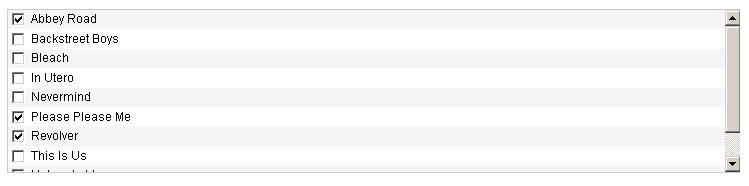
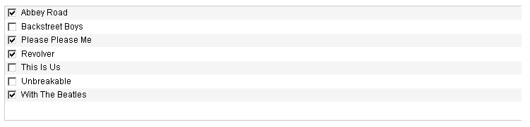
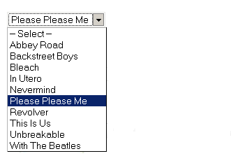
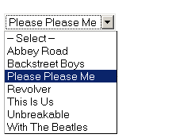

Relationships
Couch v1.3 introduces a powerful new feature that can be used to establish relationships between pages of two templates.
Some example scenarios where this feature will come in handy -
1. Your site has two discrete sections - 'products' and 'manufacturers'.
Pages of the two sections are related to each other in a way that a manufacturer may have several products whereas a product can be related to only a single manufacturer.
2. Two discrete sections - 'artists' and 'albums' can be related to each other in a way that an artist may have several albums while an album in turn can also have several artists associated with it.
How is it done?
Any relationship, necessarily, will involve two parties (actually the templates representing them). Taking the second example mentioned above, 'artists' and 'albums' are the two parties that are involved in the relationship (we'll assume the name of their respective templates to be 'artists.php' and 'albums.php').
To define a relationship between the two templates, we use a new type of editable region introduced by Couch v1.3 - relation.
Place the following code snippet in the 'artists.php' template.
<cms:editable type='relation' name='artist_albums' masterpage='albums.php' />
Make the mandatory visit to the template as super-admin. Coming back to the admin-panel and editing any of artist.php's cloned pages will show us something like this -

As can be seen, Couch shows us a list of all the cloned pages of 'albums.php'.
We can choose all the albums from this list that are related to the artist being edited.
By default, all the pages of the related template are show in the list. We can exert some control over which pages get listed (and how) by using the following parameters of the 'editable' tag of type relation -
folder
include_subfolders
orderby
order_dir
Important points to note in the code above -
1. It is the 'masterpage' parameter that specifies the template at the 'other' end of the relationship - i.e. we have placed this code in 'albums.php' that implicitly makes it one of the two templates involved in the relationship - the 'masterpage' parameter explicitly specifies the second one.
2. Although there are two templates involved in the relationship, we can place the code defining the relationship in only one of the two.
Which of the two templates is used to define the relationship is sometimes purely an arbitrary decision, although there is an important behavior that might help us in making the choice -
While being edited, it is only the pages of the template that carries the relation defining editable tag (let us call this template the 'primary' template) that display a list of pages of the opposite template to choose from.
In our example we have chosen the 'artists.php' template to be the 'primary' template in the relationship. While editing any page of this template, we'll be shown a list of all the 'albums' to choose from and hence relate to the artist being edited.
The reverse is not true - i.e. while editing an 'album', there will no such list of 'artists' to choose from.
Apart from this distinction, the two templates are equal partners in the relationship. Given an 'artist', we can query all the 'albums' related to it and likewise given an 'album' we can find all the 'artists' related to it with equal ease.
3. Finally, the relationship being defined can be named (using the 'name' parameter) arbitrarily but it is a good practice to use the names of both the templates participating in the relationship. In our example, the name 'artist_albums' will make it easy to know that this relationship is about an artist with the albums.
Types of relations
Many-to-Many relation
In our example above, an artist can be associated with multiple albums. Conversely, an album may also be associated with multiple artists.
This is what is known in database parlance as a 'Many-to-Many relation'. It is the default type of relation that we get unless we specify otherwise while defining the relation (using the parameters discussed below).
One-to-Many relation
To illustrate this type of relationship, let us assume that an artist can still have multiple albums but an album can be associated with only a single artist (no more 'bands' - only solo albums permitted).
This is a 'One-to-Many relation' and is very commonly encountered. It might seem a little contrived for our artists and albums example but consider the following entities -
a. Authors and books (An author can write multiple books but a book can be written by only one author)
b. Albums and songs (an album consists of multiple songs but a song can only be in a single album)
c. Orders and order-items (an e-commerce classic - an order can have multiple order-items but an order-item can only be related to a single order).
To define a One-to-Many relation in Couch, we make a small change to our code -
<cms:editable type='relation' name='artist_albums' masterpage='albums.php' reverse_has='one' />
The reverse_has parameter simply specifies that a page of the template related in 'reverse' (i.e. the 'albums' in our example) 'has' only 'one' associated page of the template at other end (i.e. 'artists')
Returning back to the edit-panel we find that we still have a multi-select list but this list of 'albums' only shows the albums that are not associated with any other artist.

If we were to select any albums to associate them with the artist being edited and then move on to edit another artist, the albums we associated with the previous artist will not be available with this artist.
Many-to-One relation
For the sake of illustration, now let us make the (preposterous) assumption that an artist can have only a single album associated with him while an album can still be associated with multiple artists.
This is a 'Many-to-One relation' and to define such kind of a relation we need to make the following change to our code -
<cms:editable type='relation' name='artist_albums' masterpage='albums.php' has='one' />
The has parameter specifies that the 'primary' template (the one this code is present in i.e. 'artists' in our example) has only 'one' associated page of the opposite template ('albums' in our example).
This is what the edit-panel shows now.

As can be seen, instead of a list with checkboxes allowing multiple choices, we now have a drop-down list that allows a single choice only.
Once again, this type of relation looks mighty contrived for our artists and albums example. But in realty, it is actually only the 'One-to-Many relation' we saw above in reverse.
It would make a lot more sense if, instead of the 'artists' template, we define the relationship in the 'albums' templates (thus making the 'albums' template the 'primary' template).
<cms:editable type='relation' name='album_artists' masterpage='artists.php' has='one' />
Now while editing an album, we'll see a drop-down list showing all the artists and we can choose the single artist this album belongs to. This way an album can be associated with only a single artist but an artist can be associated with multiple albums - which, I'm sure you'll agree, is a more real-life situation.
Incidentally, this also illustrates a case where you'd want to give a little thought as to which template you'd want to make the 'primary' in the relationship.
One-to-one relation
As the name suggests, if our example artists and albums scenario were to be converted to this type of relationship, an artist could be associated with only a single album and conversely, an album could be associated with only a single artist.
This is a not a relationship that you'll find very often because it offers no design benefits. As you can see from our example scenario, it'd be better to define all the 'album' fields in the 'artist' template itself.
This is how we define this type of relation -
<cms:editable type='relation' name='album_artists' masterpage='artists.php' has='one' reverse_has='one' />
The resulting edit-panel shows a drop-down (allowing a single selection) of only those albums that are not yet associated with any other artist.

Displaying the related pages
With the relationship having been defined between the two templates and the 'album' pages associated with their 'artists', now comes the time to display the related pages with the page they are related to e.g.
While showing an 'artist' page, display all the albums associated with this artist or
while showing an 'album' page, display all the artists associated with this album.
Couch provides two different tags to do this enumeration for us -
related_pages
We use the related_pages tag to list pages of the opposite template that are related to a page of a primary template (i.e. the one defining the relationship).
In our example, the 'artists' template is the primary so we use the following code in 'artists.php' -
<cms:if k_is_page >
<!-- All variables of 'artists.php' are available here -->
<h2>Artist: <cms:show k_page_title /></h2>
<h3>Related albums:</h3>
<cms:related_pages 'artist_albums' >
<!-- All variables of 'albums.php' are available here -->
<cms:show k_page_title /><br/>
</cms:related_pages>
</cms:if>
Please notice that in the code above, we have specified the name of the relation field ('artist_albums'). This can be omitted if there is only a single editable region of type 'relation' in the template, but it is better to include the name for clarity.
reverse_related_pages
We use the reverse_related_pages to list the pages of the primary template that are related to page belonging to the opposite template.
In our example it is the 'albums' template that falls at the opposite end of the relationship.
To list all 'artists' that are associated with the 'album' page being visited, we place the following code into 'albums.php' -
<cms:if k_is_page >
<!-- All variables of 'albums.php' are available here -->
<h2>Album: <cms:show k_page_title /></h2>
<h3>Artists:</h3>
<cms:reverse_related_pages 'artist_albums' masterpage='artists.php' >
<!-- All variables of 'artists.php' are available here -->
<cms:show k_page_title /><br/>
</cms:reverse_related_pages>
</cms:if>
Please notice in the code above that, like 'related_pages' tag, we have specified the name of the relation field ('artist_albums'). This can be omitted if there is only a single editable region of type 'relation' in the 'primary' template.
Unlike 'related_pages' tag, however, in 'reverse_related_pages' it is mandatory to provide the name of the template that contains the relation field (i.e. the 'primary' template that defines the relationship - 'artists.php' in our example).
Come to think about it - this code is executing within 'albums.php' while the definition of the relationship is contained in 'artists.php'. There is nothing in 'albums.php' that makes it aware about the relationship formed by 'artists.php'. Therefore, when working with the 'opposite' template, we have to specify the 'primary' template also.
Context where these tags are used
In both the code examples above you might have noticed that we did NOT provide the name or id of the page the pages related to which are fetched.
This is because we used the 'related_pages' and 'reverse_related_pages' tags in context of a 'page-view' (the enclosing 'if k_is_page' statement ensures this).
All the information regarding the page being currently viewed is already available in this view and 'related_pages'/'reverse_related_pages' tags pick up this info from the context thus displaying the pages related to whatever page is being viewed.
In fact, both the 'related_pages' as well as the 'reverse_related_pages' tags cannot be directly given the id/name of a page to fetch the related pages of. They will only work if used in context of a page. For places where the context of a single-page is not available (e.g. list-view or even page-view of a different template), we can provide it with the context of the right page by using the 'pages' tag.
For example, the following code will get all related albums of John Lennon -
<cms:pages masterpage='artists.php' page_name='john-lennon'>
<h3>Albums of John Lennon:</h3>
<cms:related_pages 'artist_albums' >
<!-- All variables of 'albums.php' are available here -->
<cms:show k_page_title /><br/>
</cms:related_pages>
</cms:pages>
The 'related_pages' and 'reverse_related_pages' tags are almost identical to the pages tag we know so well. Just like the pages tag, these two tags also make available all the variables associated with the (related) page being iterated. They also support almost all the parameters that the pages tag supports.